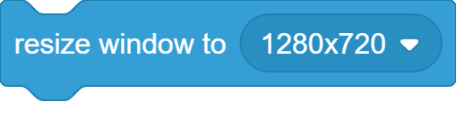
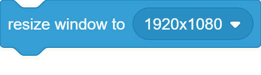
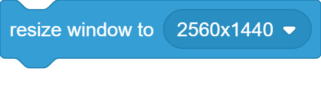
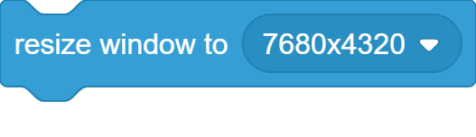
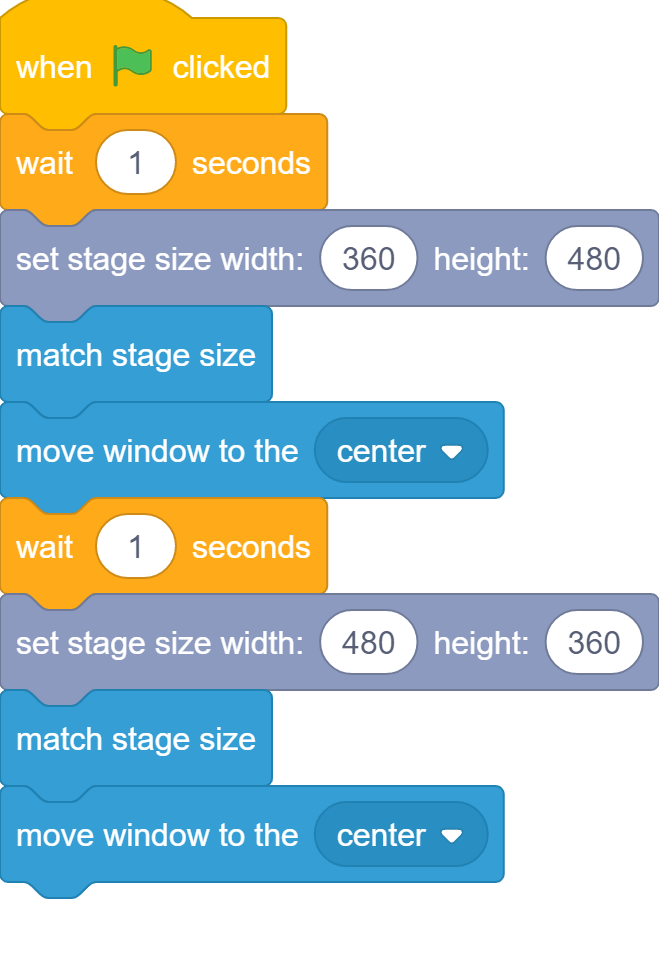
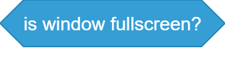

About this extension (link)
This extension provides a set of blocks that gives you greater control over the Program Window.
Note: Most of these blocks only work in Electron, Pop Ups/Web Apps containing HTML packaged projects, and normal Web Apps.
Examples are the TurboWarp Desktop App, TurboWarp Web App, Pop Up/Web App windows that contain the HTML packaged project, and plain Electron.
Blocks that still work outside of these will be specified.
Blocks
Move Window Block (link)

Moves the Program Window to the defined "x" and "y" coordinate on the screen.
Move Window to Preset Block (link)
Moves the Program Window to a preset.
The menu area has ten options, ("center", "right", "left", "top", "bottom", "top right", "top left", "bottom right", "bottom left", "random position")
Center

When choosing "center", it will move the Program Window to the center of the screen.
Right

When choosing "right", it will move the Program Window to the right of the screen.
Left

When choosing "left", it will move the Program Window to the left of the screen.
Top

When choosing "top", it will move the Program Window to the top of the screen.
Bottom

When choosing "bottom", it will move the Program Window to the bottom of the screen.
Top Right

When choosing "top right", it will move the Program Window to the top right of the screen.
Top Left

When choosing "top left", it will move the Program Window to the top left of the screen.
Bottom Right

When choosing "bottom right", it will move the Program Window to the bottom right of the screen.
Bottom Left

When choosing "bottom left", it will move the Program Window to the bottom left of the screen.
Random Position

When choosing "random position", it will move the Program Window to a random position on the screen.
Change "x" Block (link)

Dynamically changes the "x" position of the Program Window on the screen.
Set "x" Block (link)

Statically changes the "x" position of the Program Window on the screen.
Change "y" Block (link)

Dynamically changes the "y" position of the Program Window on the screen.
Set "y" Block (link)

Statically changes the "y" position of the Program Window on the screen.
Window "x" Reporter (link)
This reporter returns the "x" position of the Program Window.
This is supported outside of Electron, Pop Ups, and Web Apps.
Window "y" Reporter (link)
This reporter returns the "y" position of the Program Window.
This is supported outside of Electron, Pop Ups, and Web Apps.
Resize Window Block (link)

Resizes the Program Window to the defined "w" (width) and "h" (height) values.
Resize Window Preset Block (link)
Resizes the Program Window to a preset.
The menu area has eight options, ("480x360", "640x480", "1280x720", "1920x1080", "2560x1440", "2048x1080", "3840x2160", "7680x4320")
480x360

When choosing "480x360", it will resize the Program Window to 480x360 (360p). The aspect ratio for this size is 4:3.
640x480
When choosing "640x480", it will resize the Program Window to 640x480 (480p). The aspect ratio for this size is 4:3.
1280x720
When choosing "1280x720", it will resize the Program Window to 1280x720 (720p). The aspect ratio for this size is 16:9.
1920x1080
When choosing "1920x1080", it will resize the Program Window to 1920x1080 (1080p). The aspect ratio for this size is 16:9.
2560x1440
When choosing "2560x1440", it will resize the Program Window to 2560x1440 (1440p). The aspect ratio for this size is 16:9.
2048x1080
When choosing "2048x1080", it will resize the Program Window to 2048x1080 (2K/1080p[Higher Pixel Rate]). The aspect ratio for this size is 1:1.77.
3840x2160
When choosing "3840x2160", it will resize the Program Window to 3840x2160 (4K). The aspect ratio for this size is 1:1.9.
7680x4320
When choosing "7680x4320", it will resize the Program Window to 7680x4320 (8K). The aspect ratio for this size is 16:9.
Change Width Block (link)

Dynamically changes the width of the Program Window.
Set Width Block (link)

Statically changes the width of the Program Window.
Change Height Block (link)

Dynamically changes the height of the Program Window.
Set Height Block (link)

Statically changes the height of the Program Window.
Match Stage Size Block (link)

Resizes the Program Window to match the aspect ratio of the stage. Works best when the stage is dynamically changed.
Example: When using runtime options to change the stage size, using this block can help you adapt to the new stage size.
Try this example script in a packaged project:
Window Width Reporter (link)
This reporter returns the width of the Program Window.
This is supported outside of Electron, Pop Ups, and Web Apps.
Window Height Reporter (link)
This reporter returns the height of the Program Window.
This is supported outside of Electron, Pop Ups, and Web Apps.
Screen Width Reporter (link)
This reporter returns the width of the Screen.
This is supported outside of Electron, Pop Ups, and Web Apps.
Screen Height Reporter (link)
This reporter returns the height of the Screen.
This is supported outside of Electron, Pop Ups, and Web Apps.
Set Window Title Block (link)

Changes the title of the Program Window.
This is supported outside of Electron, Pop Ups, and Web Apps.
Window Title Reporter (link)
This reporter returns the title of the Program Window.
This is supported outside of Electron, Pop Ups, and Web Apps.
Is Window Focused Boolean (link)
This boolean returns true or false for whether or not the Program Window is in focus.
This is supported outside of Electron, Pop Ups, and Web Apps.
Is Window Fullscreen Boolean (link)
This boolean returns true or false for whether or not the Program Window is in fullscreen.
This is supported outside of Electron, Pop Ups, and Web Apps.
Is Window Touching Screen Edge Boolean (link)
This boolean returns true or false for whether or not the Program Window is touching the screen's edge.
This is supported outside of Electron, Pop Ups, and Web Apps.
Enter Fullscreen Block (link)

Makes the Program Window enter Fullscreen.
This is supported outside of Electron, Pop Ups, and Web Apps.
Exit Fullscreen Block (link)

Makes the Program Window exit Fullscreen.
This is supported outside of Electron, Pop Ups, and Web Apps.
Close Window Block (link)

Closes the Program Window.
This is supported outside of Electron, Pop Ups, and Web Apps.
Credits (link)
This extension is made in collaboration between CubesterYT and BlueDome.
Extension Icon, Color scheme, majority of extension, and more made by CubesterYT.
Extension Thumbnail, Color scheme, and some base code, made by BlueDome.